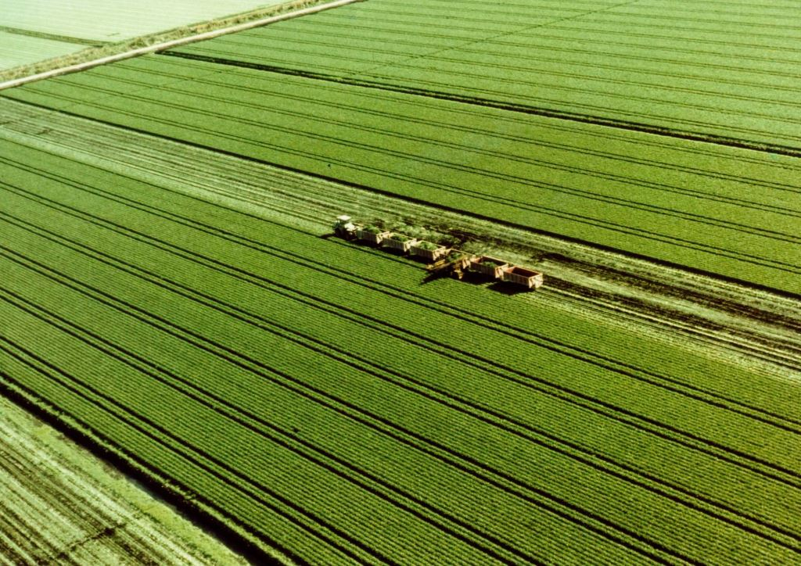
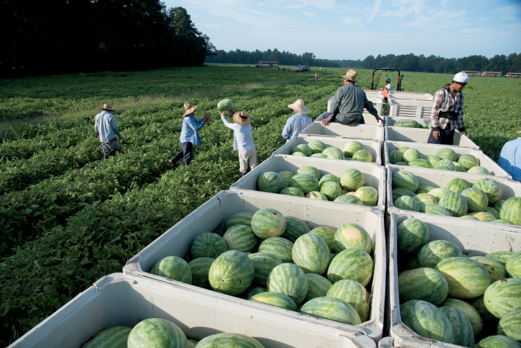
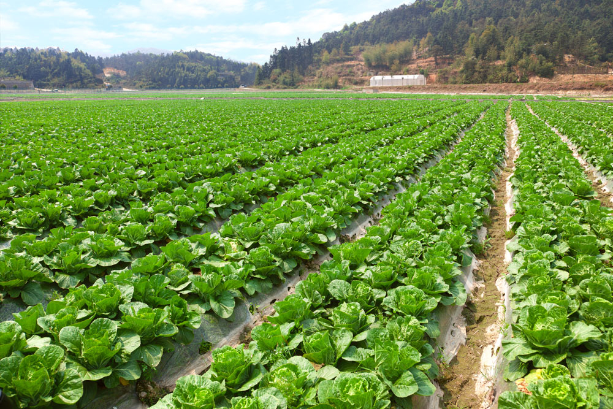
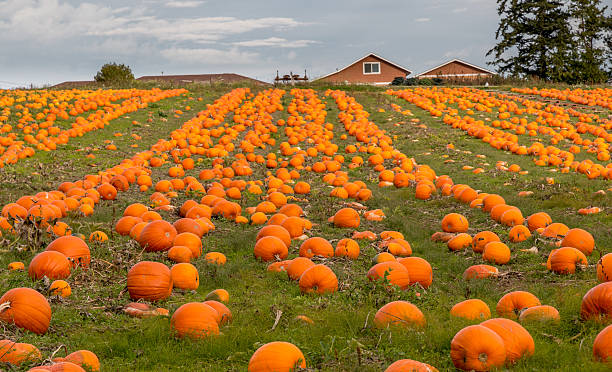

Rolling Hills Estate

The Rolling Hills Estate is a family owned estate established in 1981 and is located 2.5-hour drive north of Sydney.
The estate is very well known throughout the Hunter Valley Region and across Australia. It is one of Australia’s largest producer of celery
and operates around the clock to produce quality resources. The estate’s produce is sold only within Australia, however Rolling Hills
Estate is currently planning on expanding their business and export celery to Asia and Europe by the end of 2025.
For more information regarding the produce that this farm sells, please check the following link: Celery
Oak Farm

Oak Farm(OF), owned by Vic Rich, is one of the newest farms in the watermelon industry. This farm was established 18 years ago and currently has a total of 900 employees that work onsite
to grow and export the watermelons across Australia. The farm only exports within Australia at the moment, but intents to export internationally within the next 10 years.
OF is currently seen as a major contender in the watermelon export industry and is set to be the leading exporter of watermelons within the next 30 to 40 years.
For more information about watermelons: Watermelons
Moonshadow Lands

Moonshadow Lands is currently the one and only exporter of cabbages in Australia that directly exports cabbages to the USA only.
Established in 2007 by CEO Ben Smith, Moonshadow Lands currently employs 10,000 staff members to grow, pack and export the cabbages directly to the
USA. The farm is the one of the few farms across the globe that exports fresh cabbages to the USA
within 2 days and also holds the title of the 'The world’s fastest and largest producer of cabbages'. This farm also produces mango produce, however it is only sold within
Australia, as the mangoes undergo severe damage when exported overseas. Although, the company is researching in ways they can prevent the damage to the produce and hopes that a viable
solution can be found soon so it can start export to the USA.
For more information about cabbages: Cabbages
For more information about mangos: Mangos
Black Hawk Estate

Black Hawk Estate is currently owned by CEO Kyle Marsh, who established the farm in 1900. Kyle Marsh prides himself on
owning the one of the oldest Pumpkin producing farms in Australia and employs a total of 60,000 staff members. Although the company is one of Australia largest pumpkin producer,
it only exports it’s produce locally. CEO Kyle Marsh has stated several times to media that his farm only intends to export within Australia as
he wants to create jobs for only Australians and hopes to expand the number of jobs as the business continues to grow.
For more information about pumpkins:
Pumpkin
Haywire Ranch
 Haywire Ranch is a farm owned and founded by CEO Kevin Bacon, who is known is well known across the globe for his business endeavors in fields such as
technology, farms and travel. The farm was established in 2005 and has 100,000 staff members that work across the farm fields such as customer support.
The farm produces some of the best oranges across the globe, but it only sells the oranges to the USA only. Mr Bacon is currently planning on expanding the exporting business
to other countries within the next couple of years.
Haywire Ranch is a farm owned and founded by CEO Kevin Bacon, who is known is well known across the globe for his business endeavors in fields such as
technology, farms and travel. The farm was established in 2005 and has 100,000 staff members that work across the farm fields such as customer support.
The farm produces some of the best oranges across the globe, but it only sells the oranges to the USA only. Mr Bacon is currently planning on expanding the exporting business
to other countries within the next couple of years.
For more information about oranges: Oranges